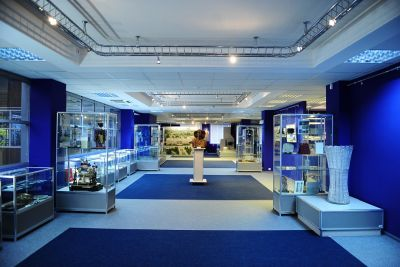
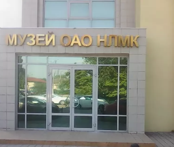

Достопримечательности Липецка


Музей НЛМК
Новолипецкий металлургический комбинат — один из самых больших заводов в мире, который выпускает почти 21% российского производства стали. Скоро НЛМК будет отмечать свой 80-летний юбилей, хотя история местных заводов началась на три века раньше, при Петре I. Петр считается отцом липецкой металлургии, поэтому бронзовый памятник ему стоит в центре города, на площади Петра Великого. Посмотреть на доменные печи и расплавленный металл в производственные цеха обычных туристов, конечно, не допустят. Но по предварительной договоренности они могут отправиться на экскурсию в музей НЛМК.
Музей существует с 1987 года. Относительно недавно, в 2006-м, он открылся после основательной реконструкции и обновления дизайна. Теперь это очень современное выставочное пространство с тремя тысячами экспонатов, доступных для обзора. Они связаны не только с НЛМК — здесь можно углубиться в историю липецкой черной металлургии вообще. Первый из здешних заводов был основан в самом конце XVII века по указу Петра I для нужд строившегося в Воронеже флота. Во времена Северной войны (1700–1721 гг.) заводы уже занимали второе место в России по выплавке чугуна. Тут делали оружие, бомбы и якоря, липецкие пушки были на вооружении русской армии под Полтавой. Модель такой пушки, отлитая в ремонтном бюро комбината, выставлена в музее.
Изображения:
 
Музей НЛМК на карте: